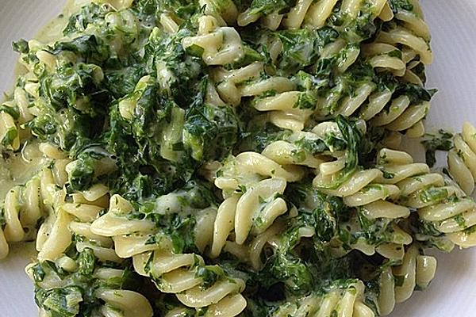

Spinatnudeln

Das Bild ist nicht akkurat und muss noch ausgetauscht werden.
Beschreibung
Dieses Gericht ist leicht zu machen und ist bei groß und klein beliebt.
Zutaten für 4+ Portionen
- 500g Fusilli
- 1 Packung Rahmspinat (450g)
- 1 Becher Schmand
- 5-6 Scheiben Scheibletten-Käse
- 2 EL Olivenöl
- 5-6 Knoblauchzehen
- Muskatnuss
Zubereitung
Gesamtzeit laut Rezept: ca. 20 Minuten
- Die Nudeln in kochendes Wasser geben und einmal aufkochen lassen. Ohne Deckel! Dann den Deckel auf den Topf legen und die Heizstelle ausstellen. Die Nudeln werden ohne kochen weich.
- In der Zwischenzeit das Öl in einen anderen Topf geben und auch schon den gefrorenen Spinat dazulegen. Mittlere Temperatur einstellen. Den Spinatblock hin und wieder etwas bewegen, damit er nicht anbrennt. Deckel auf den Topf geben.
- Wenn der Spinatblock geschmolzen ist, den Scheibletten-Käse auf den Käse geben. Verrühren. Kurz danach den Schmand hinzufügen und die Knoblauchzehen mithilfe der Knoblauchpresse ebenfalls in den Spinat geben. Alles gut verrühren und am Ende nicht zu sparsam mit Muskatnuss würzen.